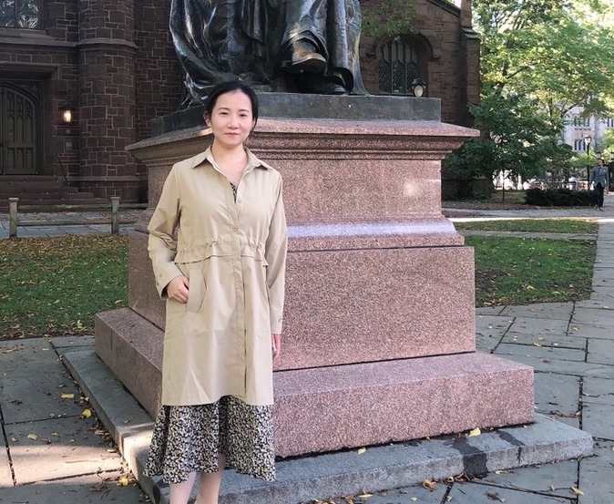

I obtained my PhD from the Department of Statistics at Rutgers University, advised by Professor Cun-Hui Zhang. Currently I am a postdoc at Yale University, working with Professor Heping Zhang. Prior to US, I was an undergraduate at Peking University studying statistics and biomedical sciences (double majors).
My research interests fall within a wide spectrum of high-dimensional statistics inlucding but not limited to compressed sensing, sparse phase retrieval, nonparametric models, statistical inferences, algorithms for high-dimensional problems. I am also bridging statistical methodology/theory with biomedical sciences (genetics, epigenetics, neuroscience, cancer research, etc), applied mathematics (representation theory), and deep learning.